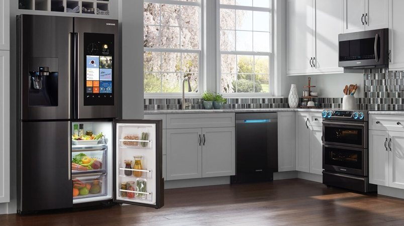
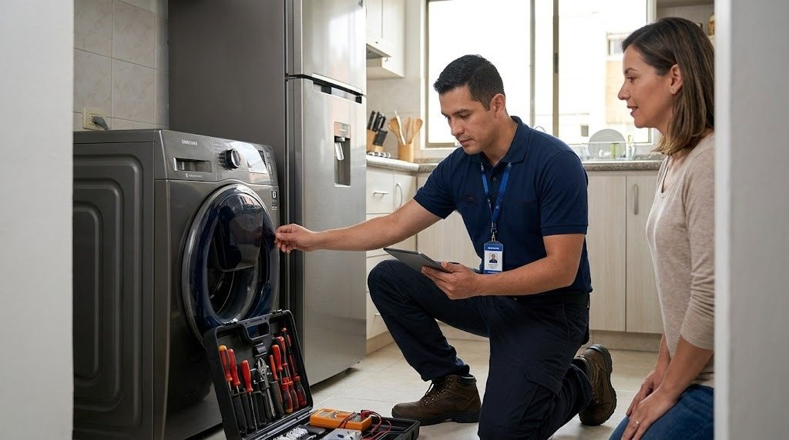
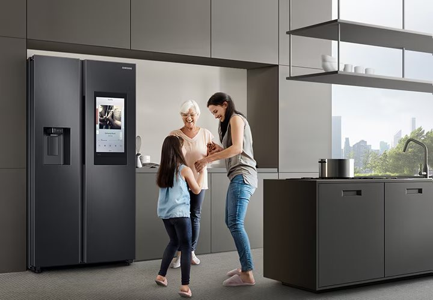
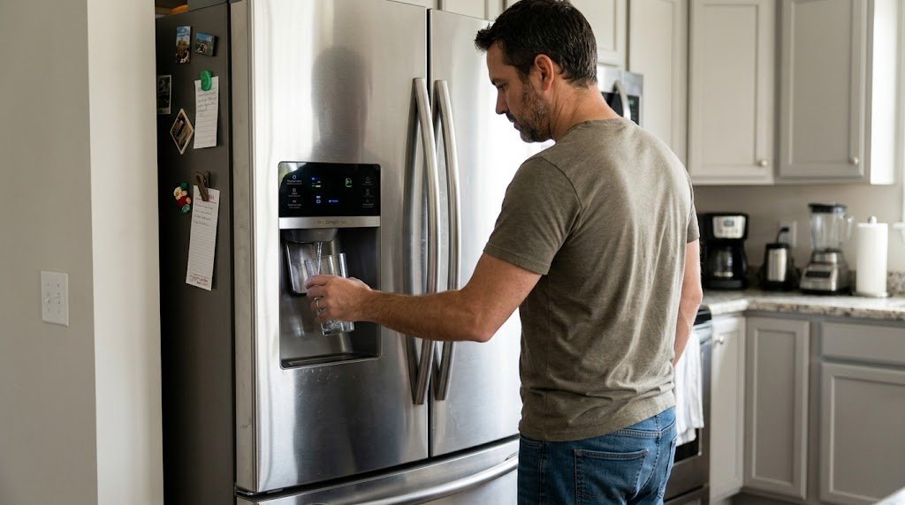

Servicio técnico Samsung en Panamá
Reparamos neveras, lavadoras, secadoras y aires acondicionados Samsung a domicilio en Ciudad de Panamá. Diagnóstico honesto, costo claro antes de reparar y garantía en cada reparación.
- Visitas en 24 a 48 horas
- Garantía en pieza y mano de obra
- Lun a Sáb 7:00am–6:00pm

Neveras French Door, Side by Side y con dispensador
Reparamos neveras Samsung que no enfrían, con escarcha, ruido, fugas de agua o dispensador dañado, en casas y apartamentos de Panamá.
Reparación de electrodomésticos Samsung en Panamá
Atendemos los equipos Samsung más usados en casas y apartamentos de la ciudad.
Neveras y Refrigeradoras
Reparamos neveras y refrigeradoras Samsung a domicilio en Ciudad de Panamá: de dos puertas (Side by Side), French Door,…
Ver servicio →Lavadoras
Reparamos lavadoras Samsung de carga superior y de carga frontal a domicilio en Ciudad de Panamá: no centrifugan, no…
Ver servicio →Secadoras
Reparamos secadoras Samsung eléctricas y de gas a domicilio en Ciudad de Panamá: no secan, no calientan, hacen ruido,…
Ver servicio →Aires Acondicionados
Instalamos, damos mantenimiento y reparamos aires acondicionados Samsung tipo split e inverter en Ciudad de Panamá: no…
Ver servicio →
Lavadoras Samsung que no centrifugan, no desaguan o gotean
Diagnosticamos carga superior y frontal, secadoras y lavasecadoras: códigos de error, bombas, seguros de puerta, amortiguadores y más.
Servicio técnico a domicilio
Reparación a domicilio
Vamos a tu casa o apartamento, revisamos tu equipo Samsung, te explicamos la falla y te damos el costo antes de…
Ver más →Mantenimiento preventivo
Un mantenimiento a tiempo evita daños mayores y alarga la vida de tus electrodomésticos, sobre todo con el calor y la humedad de…
Ver más →Instalación
Instalamos y dejamos funcionando tu equipo nuevo: nivelación, conexiones, ducto de la secadora y puesta en marcha del aire…
Ver más →Diagnóstico a domicilio
Si no sabes qué le pasa a tu equipo o si conviene repararlo, hacemos un diagnóstico honesto: qué falla, cuánto cuesta y si vale…
Ver más →Modelos Samsung que reparamos
Neveras de congelador superior, Side by Side con pantalla, lavadoras de carga superior y frontal, y secadoras.


¿Tu nevera Samsung dice «cambiar filtro»?
Cuándo reemplazarlo, cómo reiniciar el aviso y qué hacer si el agua sale lenta o con mal sabor.
Cómo agendar tu servicio técnico Samsung
- Escríbenos por WhatsApp
Cuéntanos qué equipo es, el modelo y qué le pasa. Si puedes, manda una foto o un video.
- Coordinamos la visita
Te confirmamos disponibilidad en tu zona, normalmente en 24 a 48 horas.
- Diagnóstico y reparación
Revisamos el equipo en tu casa, te explicamos la falla y el costo, y reparamos si estás de acuerdo.
Secadoras y lavadoras Samsung en torre o por separado
Un filtro de pelusas tapado es una de las causas más comunes de secadoras que no secan y lavadoras con residuos. Te explicamos cómo limpiarlo.
Servicio técnico Samsung con honestidad
Diagnóstico honesto
Te explicamos la falla y la causa antes de reparar nada. Si no vale la pena reparar, te lo decimos.
Garantía real
Cada reparación incluye garantía sobre la pieza reemplazada y la mano de obra. El plazo se confirma antes de empezar.
Costo claro
Te confirmamos el costo de la visita y de la reparación antes de empezar el trabajo.
Si tu equipo todavía está en garantía de fábrica, te lo decimos durante el diagnóstico para que decidas cómo proceder.

Que tu nevera vuelva a enfriar sin complicaciones
Escríbenos con el modelo y la falla. Coordinamos la visita en 24 a 48 horas y te confirmamos el costo antes de empezar.
Servicio técnico Samsung en tu zona de Panamá
Llegamos a los principales barrios de la ciudad, San Miguelito y Panamá Oeste.
¿Qué le pasa a tu equipo Samsung?
Mira los síntomas más comunes, la causa probable y qué tan urgente es.
Servicio técnico Samsung en Panamá: encuentra lo que necesitas
Reparación de neveras, lavadoras, secadoras y aires acondicionados Samsung, teléfono, precios, repuestos, filtros y zonas de cobertura.
Cambio de filtro de nevera
Cuándo cambiarlo y qué hacer si aparece el aviso.

La nevera Samsung no enfría
Causas y qué revisar antes de llamar.
Códigos de error de lavadora
UE, 5E, 4E, dE, LE: qué significan.
Fallas y zonas más consultadas
Preguntas frecuentes sobre el servicio técnico Samsung en Panamá
¿Hacen servicio técnico Samsung a domicilio en Panamá?
Sí. Vamos a tu casa u oficina en Ciudad de Panamá, San Miguelito y Panamá Oeste para revisar y reparar tu equipo Samsung. Escríbenos por WhatsApp con el modelo y la falla.
¿Qué equipos Samsung reparan?
Neveras, lavadoras, secadoras y aires acondicionados.
¿Dónde dan servicio?
En Ciudad de Panamá y alrededores: zonas como San Francisco, Bella Vista, Obarrio, Costa del Este, Punta Pacífica, Betania, San Miguelito, Albrook, Arraiján y La Chorrera.
¿Cuánto tardan en llegar?
Coordinamos visitas en 24 a 48 horas en la mayoría de las zonas; te confirmamos disponibilidad por WhatsApp.
¿Cuánto cuesta la visita?
Escríbenos por WhatsApp con el equipo, el modelo y la falla; te confirmamos el costo de la visita antes de ir.
¿Dan garantía?
Sí, cada reparación incluye garantía sobre la pieza reemplazada y sobre la mano de obra. El plazo se confirma antes de empezar.
¿Cuál es el horario?
De lunes a sábado, de 7:00am a 6:00pm.
¿Necesitas servicio técnico Samsung en Panamá?
Escríbenos por WhatsApp con el equipo, el modelo y la falla. Te confirmamos disponibilidad para tu zona en minutos.